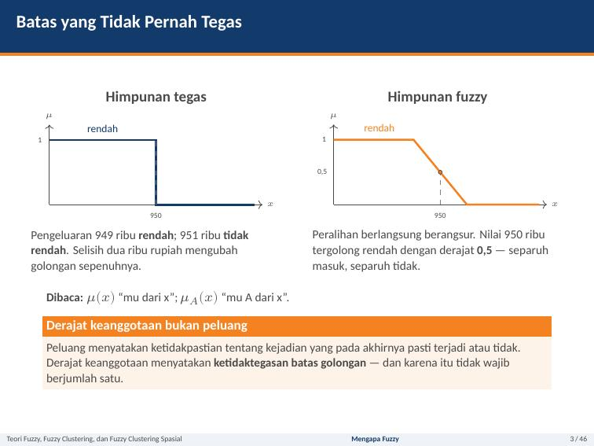
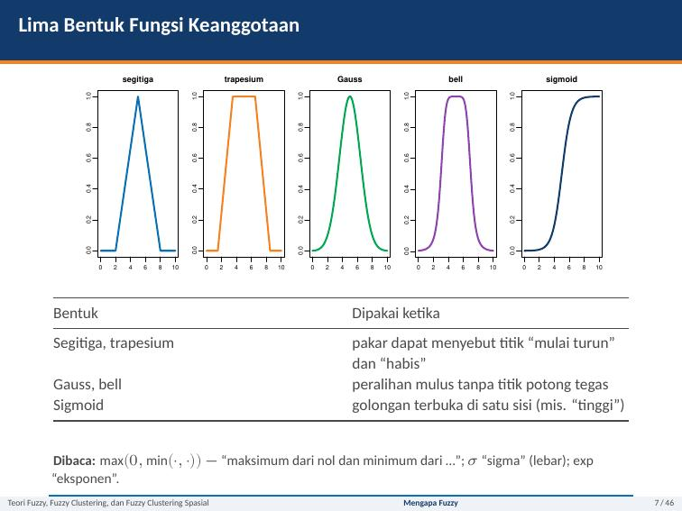
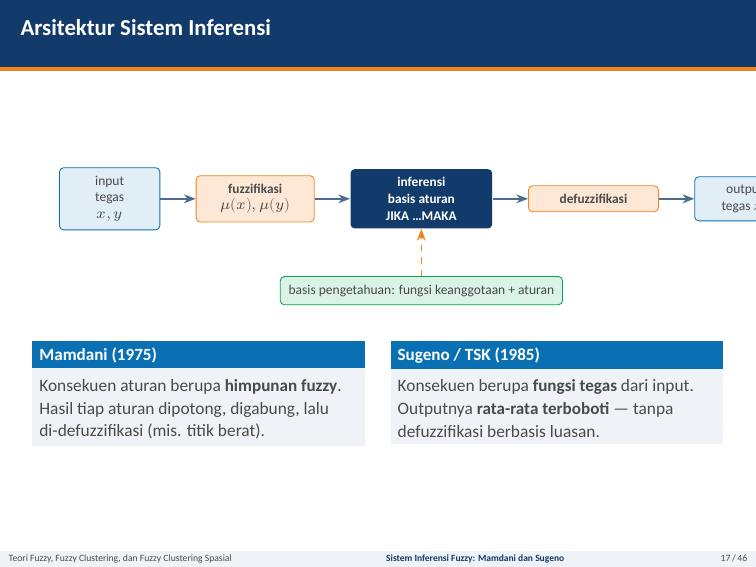
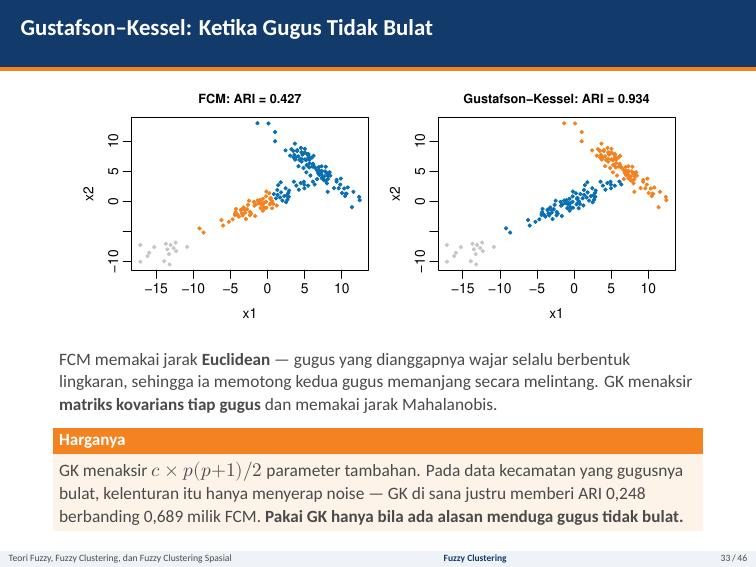
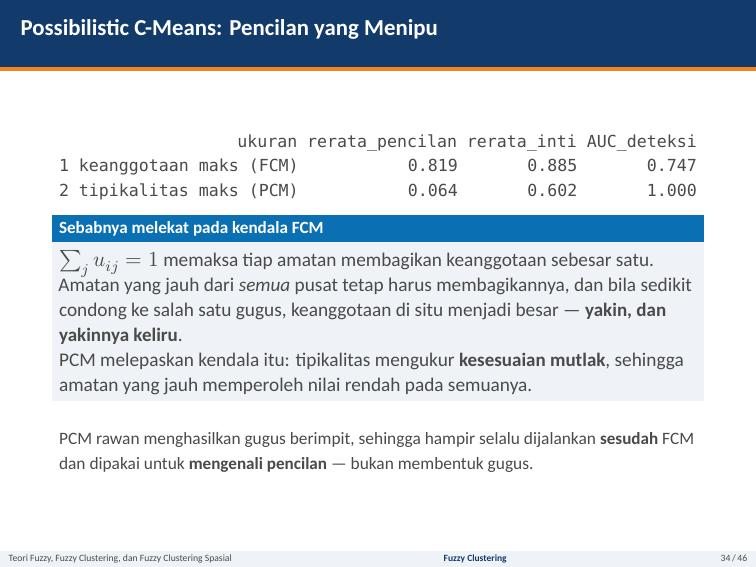
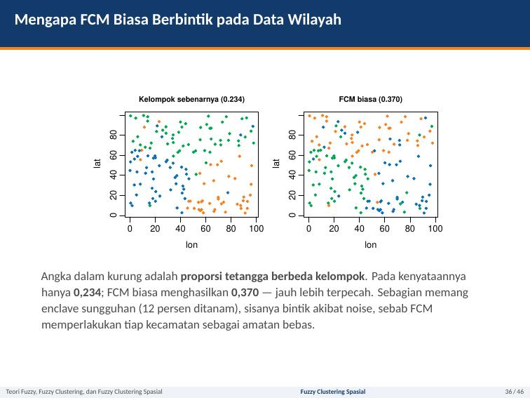
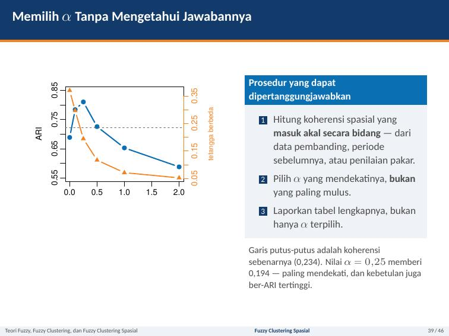

1. Pengantar Teori Himpunan Fuzzy (Zadeh, 1965)
Mengapa Logika Fuzzy Diperlukan?
Dalam dunia nyata, batas antara kategori jarang sekali bersifat hitam-putih (tegas/crisp). Contohnya: batas garis kemiskinan, status gizi balita, atau tingkat polusi udara. Seseorang dengan pengeluaran Rp 799.000 dan Rp 801.000 pada hakikatnya hidup dalam kondisi yang hampir sama persis. Namun, logika klasik (Aristotelian) memaksanya masuk ke dalam dua kategori yang saling bertolak belakang hanya karena selisih tipis terhadap suatu ambang batas kaku.
Fungsi karakteristik biner: hanya ada dua kemungkinan nilai.
$$\chi_A(x) = \begin{cases} 1, & \text{jika } x \in A \\ 0, & \text{jika } x \notin A \end{cases}$$Batas kaku, rentan terhadap distorsi di sekitar garis ambang (threshold effect).
Fungsi keanggotaan kontinu: derajat kepemilikan bertingkat.
$$\mu_A(x) \in [0, 1]$$Mengakomodasi ketidakpastian linguistik, transisi halus, dan konsep derajat kebenaran.

Tiga Istilah Dasar Himpunan Fuzzy
- Support (Pendukung): Himpunan titik-titik pada semesta pembicaraan $U$ yang memiliki derajat keanggotaan lebih besar dari nol: $$\text{Supp}(A) = \{x \in U \mid \mu_A(x) > 0\}$$
- Core (Inti): Himpunan titik-titik yang memiliki derajat keanggotaan penuh (sama dengan 1): $$\text{Core}(A) = \{x \in U \mid \mu_A(x) = 1\}$$
- Boundary (Batas / Daerah Transisi): Daerah peralihan di mana nilai keanggotaan berada di antara 0 dan 1: $$\text{Boundary}(A) = \{x \in U \mid 0 < \mu_A(x) < 1\}$$
Lima Bentuk Fungsi Keanggotaan yang Umum

- Segitiga (Triangular): Didefinisikan oleh 3 parameter $(a, b, c)$. Paling populer karena komputasinya sangat murah dan rumus linear sederhana.
- Trapesium (Trapezoidal): Didefinisikan oleh 4 parameter $(a, b, c, d)$. Memiliki rentang inti (core) berbentuk datar di mana $\mu = 1$ untuk selang $[b, c]$.
- Gaussian: Didefinisikan oleh parameter rata-rata $c$ dan standar deviasi $\sigma$: $\mu(x) = \exp\left(-\frac{(x-c)^2}{2\sigma^2}\right)$. Kurva mulus, dapat diturunkan secara analitis.
- Sigmoid (Sigmoidal): Cocok untuk fungsi terbuka di satu sisi (misalnya konsep "sangat tinggi" atau "sangat rendah").
- Generalized Bell: Kurva lonceng yang lebih fleksibel dengan kontrol kemiringan kurva.
Contoh Manual 1: Menghitung Derajat Keanggotaan (Slide 8-9)
Kasus: Tiga himpunan fuzzy pengeluaran per kapita (ribu Rp):
- Rendah: Trapesium terbuka kiri $(0, 0, 700, 950)$
- Sedang: Segitiga $(700, 950, 1200)$
- Tinggi: Trapesium terbuka kanan $(950, 1200, \infty, \infty)$
Pertanyaan Ujian: Hitung derajat keanggotaan untuk $x = 800$ ribu Rp!
Langkah Perhitungan: Karena $700 \le 800 \le 950$, maka $x=800$ berada pada fase peralihan antara himpunan Rendah dan Sedang:
- Untuk Rendah (bagian menurun): $$\mu_{\text{rendah}}(800) = \frac{d - x}{d - c} = \frac{950 - 800}{950 - 700} = \frac{150}{250} = \mathbf{0{,}60}$$
- Untuk Sedang (bagian menaik): $$\mu_{\text{sedang}}(800) = \frac{x - a}{b - a} = \frac{800 - 700}{950 - 700} = \frac{100}{250} = \mathbf{0{,}40}$$
- Untuk Tinggi: Karena $x = 800 < 950$, maka $\mu_{\text{tinggi}}(800) = \mathbf{0{,}00}$.
Pemeriksaan Konsistensi: Jumlah keanggotaan $\mu_{\text{rendah}} + \mu_{\text{sedang}} + \mu_{\text{tinggi}} = 0{,}60 + 0{,}40 + 0 = 1{,}00$ (pada model ini membentuk partisi fuzzy Ruspini yang ortogonal).
2. Operasi Himpunan Fuzzy & Potongan-Alfa ($\alpha$-Cut)
Operasi Dasar: t-norm dan s-norm
Jika dalam himpunan tegas kita mengenal operasi Irisan ($\cap$), Gabungan ($\cup$), dan Komplemen ($A^c$), dalam logika fuzzy operasi ini diperluas menjadi keluarga fungsi t-norm (triangular norm untuk konjungsi / AND) dan s-norm (t-conorm untuk disjungsi / OR).
| Keluarga Operator | t-norm (Irisan / AND: $A \cap B$) | s-norm (Gabungan / OR: $A \cup B$) |
|---|---|---|
| Standar Zadeh (Baku) | $\min(a, b)$ | $\max(a, b)$ |
| Perkalian Aljabar (Product) | $a \cdot b$ | $a + b - a \cdot b$ |
| Łukasiewicz (Bounded) | $\max(0, a + b - 1)$ | $\min(1, a + b)$ |
| Drastis (Drastic) | $b$ jika $a=1$, $a$ jika $b=1$, selain itu $0$ | $b$ jika $a=0$, $a$ jika $b=0$, selain itu $1$ |
- Hukum Pertentangan (Law of Contradiction): Pada himpunan klasik $A \cap A^c = \emptyset$. Namun pada fuzzy: $$\min(\mu_A, 1 - \mu_A) \ne 0 \quad (\text{misal jika } \mu_A = 0{,}5 \implies \min(0{,}5, 0{,}5) = 0{,}5 \ne 0)$$ Artinya, suatu amatan bisa agak miskin dan agak tidak miskin sekaligus!
- Hukum Penyisihan Jalan Tengah (Law of Excluded Middle): Pada himpunan klasik $A \cup A^c = U$. Namun pada fuzzy: $$\max(\mu_A, 1 - \mu_A) \ne 1 \quad (\text{misal jika } \mu_A = 0{,}5 \implies \max(0{,}5, 0{,}5) = 0{,}5 \ne 1)$$
Potongan-Alfa ($\alpha$-cut) & Aritmetika Bilangan Fuzzy
Potongan-$\alpha$ ($A_\alpha$): Himpunan tegas (crisp) yang memuat seluruh elemen dengan derajat keanggotaan minimal $\alpha$: $$A_\alpha = \{x \in U \mid \mu_A(x) \ge \alpha\}, \quad \alpha \in (0, 1]$$ Strong $\alpha$-cut menggunakan tanda pertidaksamaan tegas ($> \alpha$). $\alpha$-cut berfungsi sebagai jembatan dari dunia fuzzy ke keputusan operasional tegas yang dibutuhkan instansi pengambil kebijakan.
Contoh Manual 2: Penjumlahan Bilangan Fuzzy Segitiga (Slide 13-14)
Diberikan dua bilangan fuzzy segitiga: $\tilde{A} = (2, 3, 4)$ dan $\tilde{B} = (5, 6, 8)$.
1. Cari bentuk selang $\alpha$-cut untuk masing-masing bilangan:
- Untuk $\tilde{A}$: batas bawah $2 + \alpha$, batas atas $4 - \alpha \implies A_\alpha = [2 + \alpha,\, 4 - \alpha]$
- Untuk $\tilde{B}$: batas bawah $5 + \alpha$, batas atas $8 - 2\alpha \implies B_\alpha = [5 + \alpha,\, 8 - 2\alpha]$
2. Penjumlahan interval pada level $\alpha$:
$$(A \oplus B)_\alpha = [(2 + \alpha) + (5 + \alpha),\, (4 - \alpha) + (8 - 2\alpha)] = [7 + 2\alpha,\, 12 - 3\alpha]$$3. Evaluasi puncak ($\alpha = 1$) dan alas ($\alpha = 0$):
- Saat $\alpha = 0 \implies [7, 12]$ (lebar pendukung = $12 - 7 = 5$)
- Saat $\alpha = 1 \implies [7 + 2, 12 - 3] = [9, 9]$ (puncak inti $= 9$)
Hasil Akhir: $\tilde{A} \oplus \tilde{B} = (7, 9, 12)$ berbentuk bilangan fuzzy segitiga.
Catatan Fenomenal: Support dari $\tilde{A}$ lebarnya 2, support $\tilde{B}$ lebarnya 3, sedangkan hasil penjumlahan lebarnya 5. Ketidakpastian selalu menumpuk (akumulasi ketidakpastian)!
3. Sistem Inferensi Fuzzy: Mamdani versus Sugeno (TSK)
Sistem Inferensi Fuzzy (Fuzzy Inference System / FIS) memetakan ruang masukan (input) ke ruang keluaran (output) menggunakan aturan-aturan IF-THEN berbasis logika fuzzy.

Studi Kasus Soal Manual: Prioritas Penanganan Kecamatan (Slide 18-24)
Input: Pengeluaran per kapita $x = 850$ ribu Rp, Akses Sanitasi Layak $y = 55\%$.
Output: Skor Prioritas Bantuan $z \in [0, 100]$.
- Fungsi Pengeluaran $x \in [700, 1000]$: $$\mu_{\text{rendah}}(850) = \frac{1000 - 850}{1000 - 700} = \frac{150}{300} = 0{,}500; \quad \mu_{\text{tinggi}}(850) = 0{,}500$$
- Fungsi Sanitasi $y \in [40, 80]$: $$\mu_{\text{buruk}}(55) = \frac{80 - 55}{80 - 40} = \frac{25}{40} = 0{,}625; \quad \mu_{\text{baik}}(55) = \frac{55 - 40}{80 - 40} = \frac{15}{40} = 0{,}375$$
Dengan operator AND standar (t-norm minimum), $\alpha_i = \min(\mu_{\text{anteseden}})$:
| Aturan | Kondisi Anteseden | Perhitungan $\alpha_i$ | Nilai $\alpha_i$ |
|---|---|---|---|
| $R_1$ | JIKA $x$ rendah DAN $y$ buruk | $\min(0{,}500;\, 0{,}625)$ | 0,500 |
| $R_2$ | JIKA $x$ rendah DAN $y$ baik | $\min(0{,}500;\, 0{,}375)$ | 0,375 |
| $R_3$ | JIKA $x$ tinggi DAN $y$ buruk | $\min(0{,}500;\, 0{,}625)$ | 0,500 |
| $R_4$ | JIKA $x$ tinggi DAN $y$ baik | $\min(0{,}500;\, 0{,}375)$ | 0,375 |
| Jumlah Total Firing Strength $\sum \alpha_i$ | 1,750 | ||
⚠️ Perhatikan: $\sum \alpha_i = 1{,}750 \ne 1$. Derajat penyalaan tidak otomatis bernilai 1. Oleh karena itu pada metode Sugeno WAJIB membagi dengan $\sum \alpha_i$!
A. Metode Mamdani
- Konsekuen: Berupa himpunan fuzzy (kurva area).
- Implikasi: Kurva konsekuen dipotong pada ketinggian $\alpha_i$ (metode *min*).
- Agregasi: Penggabungan semua kurva terpotong via operasi *max*.
- Defuzzifikasi: Menghitung titik berat (Centroid / COA): $$z^* = \frac{\int z \cdot \mu(z) \, dz}{\int \mu(z) \, dz} = \mathbf{60{,}45}$$
- Alternatif: Mean of Maxima (MOM) menghasilkan $z^* = 72{,}5$.
B. Metode Sugeno (TSK)
- Konsekuen: Fungsi tegas (matematis) atau konstanta.
- Defuzzifikasi: Rata-rata terboboti sederhana (sangat cepat!): $$z^* = \frac{\sum_{i=1}^R \alpha_i z_i}{\sum_{i=1}^R \alpha_i}$$
- Sugeno Orde Nol ($z_i = c_i$ konstanta): Konstanta prioritas: $c_1=90, c_2=65, c_3=55, c_4=25$. $$z^* = \frac{0{,}5(90) + 0{,}375(65) + 0{,}5(55) + 0{,}375(25)}{1{,}750} = \frac{106{,}25}{1{,}750} = \mathbf{60{,}714}$$
- Sugeno Orde Satu ($z_i = p_i x + q_i y + r_i$ linear): $$z^* = \frac{107{,}938}{1{,}750} = \mathbf{61{,}679}$$
Tabel Komparasi Lengkap: Mamdani vs Sugeno
| Kriteria Pembanding | Mamdani | Sugeno (Takagi-Sugeno-Kang) |
|---|---|---|
| Bentuk Konsekuen | Himpunan fuzzy (kurva luasan) | Fungsi matematika tegas / konstanta |
| Proses Defuzzifikasi | Menghitung integral luas (Centroid/Bisector) | Rata-rata terbobot sederhana ($\frac{\sum \alpha_i z_i}{\sum \alpha_i}$) |
| Beban Komputasi | Lebih berat & lambat | Sangat ringan, efisien, cepat |
| Kemudahan Interpretasi | Sangat mudah dipahami pakar manusia | Sulit ditafsirkan (koefisien linear kurang intuitif) |
| Tuning / Kalibrasi Otomatis | Sulit dioptimasi dengan algoritma | Sangat mudah (kuadrat terkecil, ANFIS) |
| Permukaan Output | Bisa bergelombang/melompat | Mulus & kontinu (smooth transitions) |
| Domain Penggunaan Utama | Sistem pakar, DSS kebijakan sosial | Sistem kontrol industri, peramalan numerik |
4. Fuzzy Clustering: Fuzzy C-Means (FCM)
Dikembangkan oleh Dunn (1973) dan disempurnakan oleh Bezdek (1981). Berbeda dengan K-Means di mana sebuah titik secara kaku hanya boleh dimiliki oleh satu klaster saja ($u_{ik} \in \{0, 1\}$), pada FCM setiap titik data memiliki derajat keanggotaan bertingkat pada semua klaster ($u_{ij} \in [0, 1]$).
- $n$ = jumlah observasi, $c$ = jumlah klaster.
- $m > 1$ = fuzzifier (derajat kekaburan / pembobot keanggotaan).
- $d(x_i, v_j)$ = jarak Euclidean antara titik $x_i$ dan pusat klaster $v_j$.
Contoh Manual 4: Satu Iterasi FCM dengan Hitungan Tangan (Slide 28-29)
Data: 5 amatan 1 dimensi: $x = (2, 3, 4, 8, 9)$. Parameter: $c = 2$, $m = 2$. Pusat awal: $v_1 = 3, v_2 = 8$.
Hitung $u_{11}$ (keanggotaan titik $x_1 = 2$ pada klaster 1):
- Jarak ke pusat 1: $d_{11} = |2 - 3| = 1$
- Jarak ke pusat 2: $d_{12} = |2 - 8| = 6$
- Pangkat eksponen: $\frac{2}{m-1} = \frac{2}{2-1} = 2$
- Substitusi rumus: $$u_{11} = \frac{(1/d_{11})^2}{(1/d_{11})^2 + (1/d_{12})^2} = \frac{(1/1)^2}{(1/1)^2 + (1/6)^2} = \frac{1}{1 + \frac{1}{36}} = \frac{1}{\frac{37}{36}} = \frac{36}{37} \approx \mathbf{0{,}9730}$$
- Keanggotaan klaster 2: $u_{12} = 1 - u_{11} = 1 - 0{,}9730 = \mathbf{0{,}0270}$.
Catatan Khusus jika Titik Berimpit dengan Pusat ($x_2 = 3$):
Jarak $d_{21} = |3 - 3| = 0$. Secara komputasi limit, jika titik berimpit dengan pusat klaster, ia memperoleh keanggotaan penuh: $u_{21} = \mathbf{1{,}0000}$ dan $u_{22} = \mathbf{0{,}0000}$.
| Titik $x_i$ | $u_{i1}$ (Iterasi 1) | $u_{i2}$ (Iterasi 1) | $u_{i1}$ (Iterasi 2) |
|---|---|---|---|
| $x_1 = 2$ | 0,9730 | 0,0270 | 0,9776 |
| $x_2 = 3$ | 1,0000 | 0,0000 | 1,0000 |
| $x_3 = 4$ | 0,9412 | 0,0588 | 0,9488 |
| $x_4 = 8$ | 0,0000 | 1,0000 | 0,0000 |
| $x_5 = 9$ | 0,0270 | 0,9730 | 0,0224 |
| Pusat Klaster Bergerak: Dari $v=(3{,}000;\, 8{,}000) \to v^{(1)}=(2{,}980;\, 8{,}476) \to v^{(2)}=(2{,}982;\, 8{,}493)$ | |||
| Fungsi Objektif Selalu Turun: $J^{(0)} = 2{,}887 \to J^{(1)} = 2{,}425$ | |||
Peran Fuzzifier $m$ (Slide 30)
- Jika $m \to 1^+$: FCM mendekati perilaku Hard K-Means (keanggotaan menjadi biner 0 atau 1).
- Jika $m \to \infty$: Seluruh titik menjadi sangat kabur, keanggotaan mendekati seragam: $u_{ij} \to \frac{1}{c}$.
- Rekomendasi Praktis: $m = 2{,}0$ adalah standar paling luas dan stabil.
- Peringatan: $m$ mengatur ketegasan batas, bukan ketepatan klasifikasi. Jangan memilih $m$ dengan mengejar Partition Coefficient (PC) tertinggi, karena nilai PC secara otomatis akan selalu naik jika $m$ diturunkan mendekati 1!
Ukuran Validitas Klaster Fuzzy (Slide 31)
| Ukuran Validitas | Arah Optimal | Penjelasan Matematis & Karakteristik |
|---|---|---|
| Partition Coefficient (PC) | Maksimal ($\to 1$) | $\text{PC} = \frac{1}{n}\sum_{i=1}^n \sum_{j=1}^c u_{ij}^2$. Mengukur ketegasan partisi (rentang $\left[\frac{1}{c}, 1\right]$). |
| Modified PC (MPC) | Maksimal ($\to 1$) | $\text{MPC} = 1 - \frac{c}{c-1}(1 - \text{PC})$. Menghilangkan ketergantungan rentang PC terhadap jumlah klaster $c$. |
| Partition Entropy (PE) | Minimal ($\to 0$) | $\text{PE} = -\frac{1}{n}\sum_{i=1}^n \sum_{j=1}^c u_{ij} \log_a(u_{ij})$. Mengukur ketidakteraturan / keacakan partisi. |
| Xie-Beni Index (XB) | Minimal | $\text{XB} = \frac{J_m / n}{c \cdot \min_{j \ne l} \|v_j - v_l\|^2}$. Rasio variansi total intra-klaster terhadap separasi minimum antar-pusat. |
| Fuzzy Silhouette (SIL.F) | Maksimal | Generalisasi Silhouette dengan membobotkan keanggotaan $u_{ij}^m$. |
Pada eksperimen simulasi di Slide 31, data sebenarnya berasal dari 3 kelompok laten yang saling bertumpang tindih (jarak pusat 1,7–3,5 SD). Seluruh indeks validitas (PC, MPC, PE, XB, SIL.F) secara serempak memilih $k = 2$! Ini bukan kerusakan formula, melainkan fakta matematis bahwa validitas internal berbasis geometri jarak tidak dapat mendeteksi klaster yang saling tumpang tindih. Analis tidak boleh hanya mengandalkan angka indeks, melainkan wajib mengecek substansi domain data.
5. Varian Lanjutan: Gustafson-Kessel & Possibilistic C-Means
A. Gustafson–Kessel (GK) Clustering

- Masalah FCM: Menggunakan jarak Euclidean biasa, sehingga mengasumsikan bentuk klaster selalu hiper-bola (spherical) dengan ukuran seragam.
- Solusi GK: Mengestimasi matriks kovarians klaster $F_j$ secara lokal dan menggunakan jarak Mahalanobis terinduksi: $$D_{ij}^2 = (x_i - v_j)^T A_j (x_i - v_j), \quad A_j = [\rho_j \det(F_j)]^{1/p} F_j^{-1}$$
- Kelebihan: Sangat akurat untuk klaster lonjong, miring, atau memiliki orientasi korelasi berbeda ($ARI = 0{,}934$ vs FCM $0{,}427$).
- Kelemahan & Biaya: Menaksir $c \times \frac{p(p+1)}{2}$ parameter matriks kovarians tambahan. Pada data dengan gugus bulat, GK rawan overfitting dan menyerap noise!
B. Possibilistic C-Means (PCM)

- Kelemahan Fatal FCM: Kendala probabilitik $\sum_{j=1}^c u_{ij} = 1$ memaksa setiap data membagikan total nilai 1 ke semua klaster. Akibatnya, titik outlier ekstrim yang sangat jauh pun akan memiliki membership tinggi pada klaster yang sedikit lebih dekat!
- Solusi PCM (Krishnapuram & Keller, 1993): Melepaskan kendala $\sum u_{ij} = 1$. Keanggotaan diganti menjadi tipikalitas mutlak ($t_{ij} \in [0, 1]$).
- Karakteristik Outlier: Titik outlier akan mendapat nilai tipikalitas rendah pada semua klaster ($t_{i1} \approx 0, t_{i2} \approx 0$).
- Peringatan Penggunaan: PCM rentan menghasilkan klaster identik/menumpuk (coincident clusters). Praktik terbaik: Jalankan FCM terlebih dahulu untuk menemukan pusat klaster awal, lalu gunakan PCM untuk memurnikan keanggotaan dan mendeteksi outlier!
6. Fuzzy Clustering Spasial (Data Geografis / Kewilayahan)
Mengapa FCM Biasa Menghasilkan Peta "Berbintik" (Salt-and-Pepper)?
FCM standar memperlakukan setiap observasi (kecamatan/kabupaten) sebagai amatan independen. Dalam realitas geografis, berlaku Hukum Pertama Geografi Tobler: "Segala sesuatu berhubungan dengan hal lain, tetapi hal yang dekat lebih berhubungan daripada hal yang jauh." Mengabaikan struktur spasial menghasilkan partisi berbintik (salt-and-pepper noise), di mana banyak kecamatan terisolasi padahal wilayah di sekitarnya homogen.

Regularisasi Spasial (Spatial Regularization)
- $\bar{u}_{ij}$ = rata-rata derajat keanggotaan tetangga spasial dari unit amatan $i$.
- $w_{ik}$ = matriks bobot spasial ternormalisasi ($\sum_k w_{ik} = 1$).
- $\alpha \ge 0$ = parameter kekuatan regularisasi spasial (jika $\alpha = 0$, kembali menjadi FCM biasa).
- Langkah akhir: Normalkan kembali agar $\sum_{j=1}^c u_{ij}^* = 1$.
Peringatan Penting: "Peta Mulus Bukan Bukti Pengelompokan yang Benar!" (Slide 38-39)

Ketika $\alpha$ dinaikkan dari $0 \to 0{,}25$, skor ARI meningkat dari $0{,}689 \to 0{,}811$ karena noise berhasil diredam. Namun saat $\alpha$ dinaikkan lebih lanjut hingga $2{,}0$, peta memang terlihat sangat mulus dan indah, tetapi nilai ARI justru anjlok ke $0{,}588$ (lebih buruk dari FCM biasa!).
Mengapa demikian? Regularisasi spasial yang terlalu agresif akan "membunuh" kantong-kantong anomali riil (genuine enclaves) seperti kawasan industri atau pusat perkotaan kecil di tengah pedesaan. Prosedur yang benar: Jangan memilih $\alpha$ yang menghasilkan peta paling mulus, melainkan pilih $\alpha$ yang mendekati koherensi spasial historis/substantif dari data pembanding!
Menyajikan Hasil Beserta Keraguannya (Slide 40)
Sumbangan terpenting pendekatan fuzzy dalam analisis kebijakan publik bukanlah membuat label klaster menjadi lebih tepat, melainkan membuat ketidakpastian / ambiguitas menjadi terlihat. Menyajikan peta dengan tingkat keanggotaan tertinggi yang rendah ($< 0{,}6$) memungkinkan pembuat kebijakan memberikan perlakuan khusus bagi daerah perbatasan transisi!
7. Matriks Keputusan, 10 Jebakan Ujian STIS, & Glosarium
Matriks Pemilihan Metode (Kapan Pakai Apa?)
| Kondisi Masalah Data | Metode Pilihan | Alasan Ilmiah |
|---|---|---|
| Aturan berasal dari pengetahuan pakar; keputusan harus dijelaskan ke publik | Mamdani | Struktur aturan menggunakan bahasa linguistik manusia (IF-THEN kata-kata). |
| Model diintegrasikan ke sistem kendali / peramalan; parameter ditaksir data | Sugeno (TSK) | Komputasi cepat, permukaan output mulus, mudah dituning via ANFIS. |
| Gugus klaster berbentuk bulat / sferis, ukuran seimbang, tanpa outlier | FCM Baku | Domain alami jarak Euclidean dengan biaya komputasi rendah. |
| Gugus klaster berbentuk lonjong, miring, atau memiliki orientasi kovarians | Gustafson–Kessel | Menggunakan jarak Mahalanobis adaptif per klaster. |
| Terdapat banyak pencilan (outlier) ekstrem yang merusak posisi pusat | Possibilistic C-Means | Tipikalitas mutlak melepaskan kendala $\sum u = 1$; outlier bernilai 0 di semua gugus. |
| Data wilayah geografis (spasial) yang menghasilkan peta berbintik | Regularisasi Spasial | Memanfaatkan kedekatan spasial tetangga (Tobler's First Law). |
Sepuluh Jebakan Klasik UAS Data Mining (Slide 43)
- Jebakan 1: Menganggap derajat keanggotaan fuzzy $\mu(x)$ sebagai nilai peluang/probabilitas. (Fuzzy mengukur derajat kesesuaian konsep, bukan frekuensi kejadian acak!).
- Jebakan 2: Memilih bentuk fungsi keanggotaan sembarangan tanpa justifikasi bidang, lalu tidak melaporkannya di laporan.
- Jebakan 3: Memakai t-norm bawaan (min) tanpa menyadari bahwa t-norm perkalian menghasilkan sifat interaksi yang berbeda.
- Jebakan 4: Lupa membagi dengan $\sum \alpha_i$ pada defuzzifikasi model Sugeno.
- Jebakan 5: Tidak menyatakan metode defuzzifikasi yang digunakan (Centroid vs MOM memberikan nilai numerik yang jauh berbeda!).
- Jebakan 6: Memilih fuzzifier $m$ dengan mengejar Partition Coefficient (PC) tertinggi (PC selalu naik jika $m \to 1$).
- Jebakan 7: Menentukan jumlah klaster $c$ hanya dari satu ukuran validitas internal saja.
- Jebakan 8: Memaksakan Gustafson-Kessel pada data bergugus bulat, atau memakai PCM secara mandiri sejak awal tanpa inisialisasi FCM.
- Jebakan 9: Memilih $\alpha$ regularisasi spasial dengan kriteria "peta paling mulus" (menghilangkan enclave riil).
- Jebakan 10: Menyajikan peta hasil klasterisasi tegas (defuzzified) tanpa menampilkan peta keraguan/ambiguitas wilayah transisi.
Glosarium Istilah Baku Statistika & Data Mining
- Support: Daerah semesta dengan $\mu(x) > 0$.
- Core: Daerah semesta dengan $\mu(x) = 1$.
- Boundary: Daerah transisi $0 < \mu(x) < 1$.
- $\alpha$-cut: Potongan tegas dengan $\mu(x) \ge \alpha$.
- Firing strength ($\alpha_i$): Kekuatan penyalaan aturan fuzzy.
- Centroid: Titik berat pusat massa kurva output.
- Fuzzifier ($m$): Parameter derajat kekaburan klaster.
- Typicality ($t_{ij}$): Derajat kecocokan mutlak dalam PCM.
- Enclave: Wilayah kantong berbeda di tengah kawasan homogen.
- Anteseden: Klausul premis bagian "JIKA (IF)".
- Konsekuen: Klausul kesimpulan bagian "MAKA (THEN)".
- Tobler's Law: Objek berdekatan memiliki kemiripan lebih tinggi.